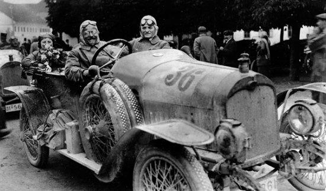

HISTORIA AUDI
Primero, tejedoras
Cuatro empresas son las responsables del nacimiento de Audi. NSU aparece en 1873 y se dedica, inicialmente, a la fabricación de máquinas tejedoras: el primero de los cuatro aros acaba de ver la luz. A finales de la década, la empresa se traslada de Riedlingen a Neckarsulm, Alemania.
Después, bicicletas
En 18885 los mecánicos, Johan Baptist Winklhofer y Richard Adolf Jaenicke, inauguran un negocio de reparación de bicicletas en Chemnitz. Poco después, comienzan a fabricarlas ellos mismos y a comercializarlas bajo la marca Wanderer. Aparece el segundo aro de la actual Audi. Mientras, NSU se lanza también a la producción de estos vehículos de dos ruedas.
Al fin, coches
El 14 de noviembre de 1899, August Horch funda la fábrica de automóviles que lleva su nombre. Wanderer adopta el “apellido” Fahrradwerke; queda muy poco para que sus bicicletas se conviertan en motocicletas.
El nacimiento de Audi
En esta época se producen grandes cambios: NSU comienza la producción de motocicletas y, poco después, de automoviles. Aparece DKW (bajo el nombre original de Rasmussen & Ernst), fabricante de calderas, guardabarros y sistemas de iluminación para vehículos a motor. Horch, cuyo primer automóvil pisa la carretera en 1901, traslada su compañía a Zwickau y la transforma en una sociedad de accionistas, aunque la abandona en 1909. Inmediatamente, crea una empresa nueva. Como no puede utilizar el mismo nombre, traduce su apellido al latín (¡escuche!, en alemán): así aparece Audi Automobilwerke GmbH, que empieza a operar el 25 de abril de 1910.
Pioneros
Wanderer hace realidad su sueño de fabricar coches en 1913 con el Puppchen, un pequeño biplaza que inicia una tradición que posteriormente se extenderá durante décadas. DKW se registra como marca, y experimenta con vehículos impulsados por motores a vapor. En 1919, la compañía -rebautizada como Zschopauer Motorenwerke- produce pequeños propulsores de dos tiempos. Tras la Primera Guerra Mundial,Audi se distingue por ser la primera marca que coloca el volante a la izquierda y la palanca de cambios en el centro del automóvil.
El declive del lujo
DKW alcanza el éxito como fabricante de motocicletas en 1922. Seis años más tarde lanza al mercado su primer coche. Audi construye una mecánica de seis cilindros en 1923. Cuatro años después llega el propulsor de ocho cilindros, asociado al modelo Imperator: no tiene mucho éxito, ya que el segmento de los coches de lujo ha comenzado su declive. En 1928, Jörgen Skafte Rasmunssen, director del imperio DKW, compra Audi. Wanderer, con una producción diaria de 25 vehículos, fabrica el Type W 10, equipado con un motor de 1,5 litros y 30 CV. Finalmente, NSU interrumpe en 1929 su producción de vehículos de cuatro ruedas para centrarse, de nuevo, en las motocicletas.
Juntos, pero no revueltos
El 29 de junio de 1932, Audiwerke, Horschwerke y Zschopauer Motorenwerke DKW se fusionan por iniciativa del State Bank de Sajonia: nace Auto Union AG. Además, se cierra un acuerdo de compra y arrendamiento con Wanderer para adquirir su división de coches. Auto Union se convierte en el segundo mayor fabricante de vehículos de Alemania (uno de cada cuatro automóviles registrados en el país en 1934 sale de sus factorías); su emblema, los cuatro aros entrelazados, simboliza la asociación indisoluble de las compañías fundadoras. Las empresas conservan su nombre y cada una se especializa en un segmento del mercado: DKW produce motocicletas y pequeños utilitarios, Wanderer construye coches de tamaño medio, Audi se queda con los vehículos de lujo medianos y Horch se encarga de los automóviles de alta gama. El Type 853 con motor de ocho cilindros en línea, considerado el Horch más bello jamás fabricado, aparece en 1935. Bernd Rosmeyer, piloto oficial de Auto Union, supera por primera vez en la historia los 400 km/h en una carretera pública: el acontecimiento tiene lugar durante la Semana de la Velocidad, del 25 al 29 de octubre de 1937.

El final de la guerra
Termina la Segunda Guerra Mundial y Auto Union AG , que durante la contienda había recibido órdenes para atender las instrucciones oficiales (tuvo que dedicar su producción a las demandas militares), es expropiada por las fuerzas de ocupación soviéticas. Los altos ejecutivos de la compañía se mudan a Baviera: Ingolstadt acoge, el 3 de septiembre de 1949, la fundación de la nueva Auto Union GmbH. En 1950 comienza su actividad en Dusseldorf.

Los motores de cuatro tiempos… y Volkswagen
Se producen los últimos DKW con motor de dos tiempos. Desde ese momento, los modelos con mecánica de cuatro tiempos se construyen bajo la marca Audi, nombre que adopta la empresa para su nueva etapa. NSU Motorenwerke AG presenta en el Salón del Automóvil de Alemania (1963) el Wankel Spider, el primer automóvil del mundo impulsado con un motor de pistón rotatorio fabricado en serie. En 1965 llega al mercado otro coche de Auto Union, que había trasladado la fabricación a Ingoldstatd en 1961: es el primer vehículo que la compañía crea en la posguerra con un propulsor de cuatro tiempos. El Grupo Volkswagen adquiere la corporación, que se fusiona con NSU en 1969 ; así nace Audi NSU Auto Union AG. Entre mayo de 1965 y julio de 1969 se ensamblan casi 348.000 unidades del mítico “Escarabajo”.